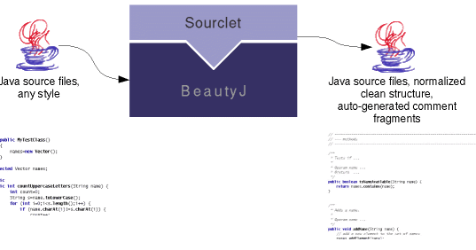
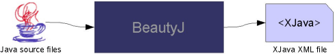
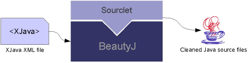
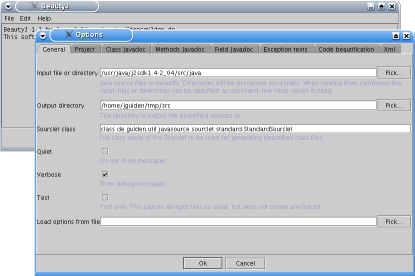

|
New: Version 1.1 released, now fully compatible with the J2SDK 1.4 API sources.
BeautyJ is a source code transformation tool for Java source files.
One main feature of BeautyJ is to auto-format Java source code by generating a clean,
normalized representation of the code.
BeautyJ is also capable of auto-generating Javadoc comments with semantic information derived from
identifier names.

Additionally, BeautyJ can convert Java source code to XML and back. BeautyJ introduces the XJava format which stores classes or interfaces
and their members together with associated source code and Javadoc comments in a single XML file:

The generated XML file can optionally be transformed by external applications and then be reconverted to beautified Java source code:

BeautyJ opens up a wide range of possibilities for automatic structuring of Java source code either by its Sourclet API or by converting Java source code to XML and allowing
any external transformations (for example by applying XSLT).
BeautyJ is freely available as an OpenSource product. It is licensed under the GNU General Public License (GPL). Please help improving BeautyJ and participate in its development – visit the project development homepage at berliOS.
Features
-
BeautyJ provides flexible configuration options to control the format of the generated output source code. Possibilities range from simply removing dead comments in code blocks to completely rebuild Javadoc information
with auto-generated documentation fragments.
-
The beautified Java source code output is fully customizable by defining a new Sourclet class that handles code beautifying. The Sourclet API that BeautyJ operates on is modeled in three layers, providing a
Sourclet interface on the basic model layer, a generic AbstractSourclet class which implements some general behaviour of a Sourclet on the second layer, and the StandardSourclet default-implementation on the
third layer.
Refer to the Javadoc API documentation of package de.gulden.util.javasource.sourclet for all details.
-
Converting Java sources to XJava XML and back allows flexible transformation of Java sources by using an external XSLT-processor or any other XML-enabled application.
-
BeautyJ is built on a reusable modular framework. The Java source code parser API can be used as an independent module by any Java application to access Java source code in an object-oriented structure.
For detailed information, refer to the Javadoc API documentation of package de.gulden.util.javasource.
-
BeautyJ is also an example for demonstrating how to build applications on top of the AMODA – Abstract Modeled Application framework API.
-
BeautyJ is freely available as OpenSource, including Javadoc API documentation
and additional UML-documented architecture overview.
-
A graphical user interface can optionally be activated using the -gui option. Screenshot: 
Readability of source code is one crucial matter of success for an OpenSource product. BeautyJ has been developed with the idea of providing an OpenSource tool for supporting the development of other
OpenSource software. However, feel free to apply BeautyJ to any project you like. (And afterwards consider publishing it as OpenSource – now that it looks that shiny. :-)
|